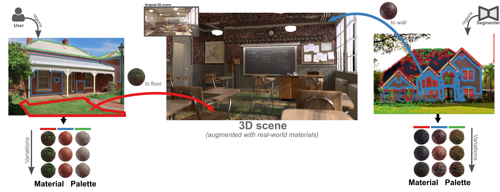

Material Palette
Extraction of Materials from a Single Real-world Image
Ivan Lopes
♠
,
Fabio Pizzati
♠♦
,
Raoul de Charette
♠
♠
Astra-vision
, Inria Paris
♦
University of Oxford
Code
extracts PBR materials from a single image of a real-world scene.

Stay tuned for our paper and code release.